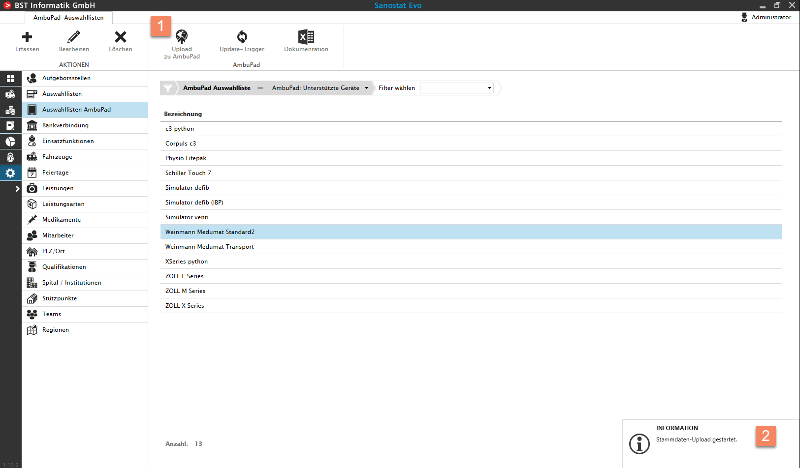
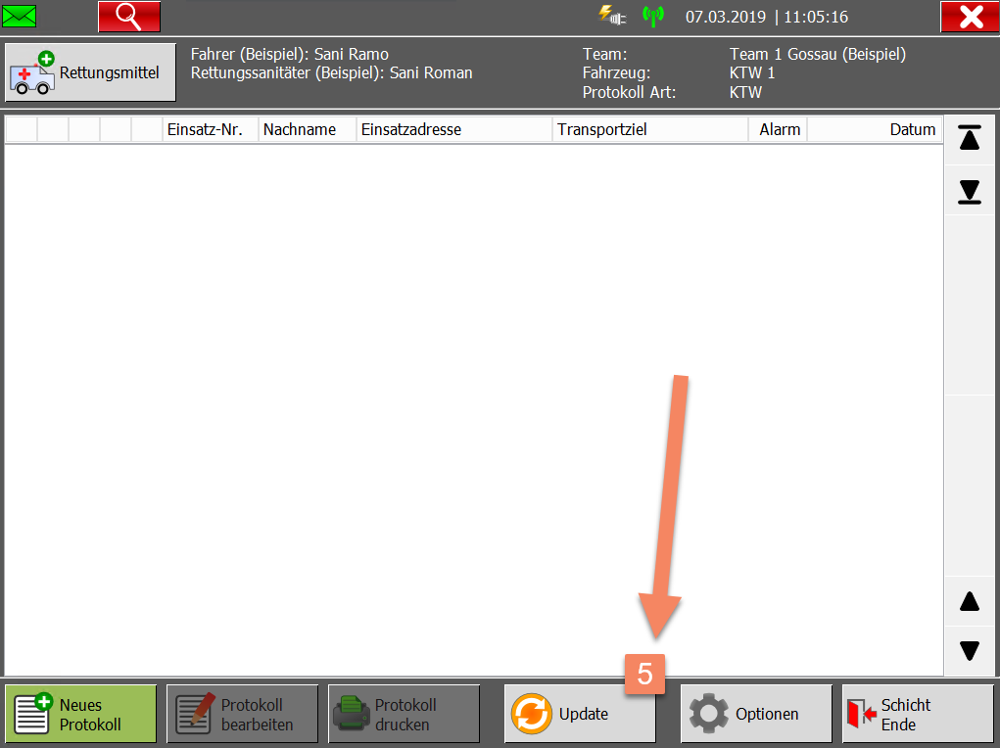
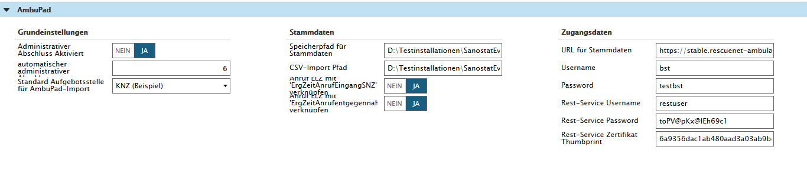

Auswahllisten AmbuPad - Upload und Update von Stammdaten
Sanostat Evo
Der User mit der Rolle 'Superuser' kann in den Stammdaten 'Auswahllisten AmbuPad' Stammdaten erfassen, ändern, ergänzen und anschliessend ins AmbuPad hochladen.

1) Upload Button
In der Stammdatenverwaltung können Sie mittels des 'Upload' Buttons die Stammdaten an das vorkonfigurierte AmbuPad hochladen.
2) Meldung 'Stammdaten-Upload gestartet'
Nach dem Betätigen des Uploads, kommt die Meldung 'Stammdaten-Upload gestartet'.
3) Meldung 'Stammdaten-Upload erfolgreich'
Es muss auf die Meldung 'Stammdaten-Upload erfolgreich' gewartet werden, diese bestätigt den Upload aller Stammdaten, die von Sanostat Evo fürs AmbuPad zur Verfügung gestellt werden.
Zum Testen ob der Upload funktioniert hat kann unter dem folgenden Link der letzte Upload angesehen werden.
https://t1.dev.rescuenet-ambulancepad.com//masterdata/list
oder
https://stable.rescuenet-ambulancepad.com/masterdata/list
4) 'Update-Trigger' betätigen
Achtung!
Der Update-Trigger darf erst betätigt werden, wenn die Meldung für die Bestätigung (3) des Uploads erschienen ist.
Der Update Trigger bewirkt, dass auf dem AmbuPad die Stammdaten sofort verfügbar sind. In der Regel muss das AmbuPad (auf dem Desktop) neu gestartet und dann kann der Update auf dem AmbuPad durchgeführt werden.
5) Stammdaten Updaten auf AmbuPad

Danach erscheint der Update Button (5) und die Stammdaten können mit dem Betätigen dieses Buttons aktualisiert werden.
Hier sind noch die Testeinstellungen für AmbuPad ersichtlich:
User: bst
PW: testbst
Rest-Service-User:restuser
Rest-Service-PW: toPV@pKx@lEh69c1
Rest-Service-Zertifikat: 6a9356dac1ab480aad3a03ab9bde08da1cfe97d6
